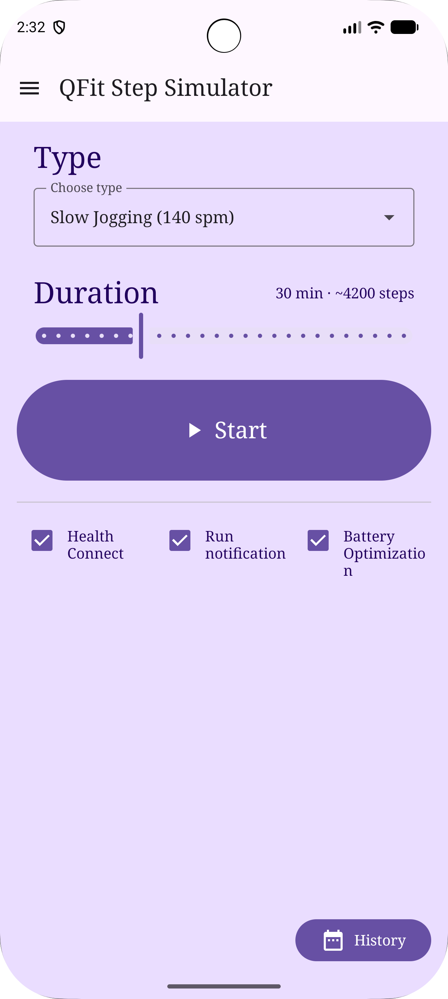
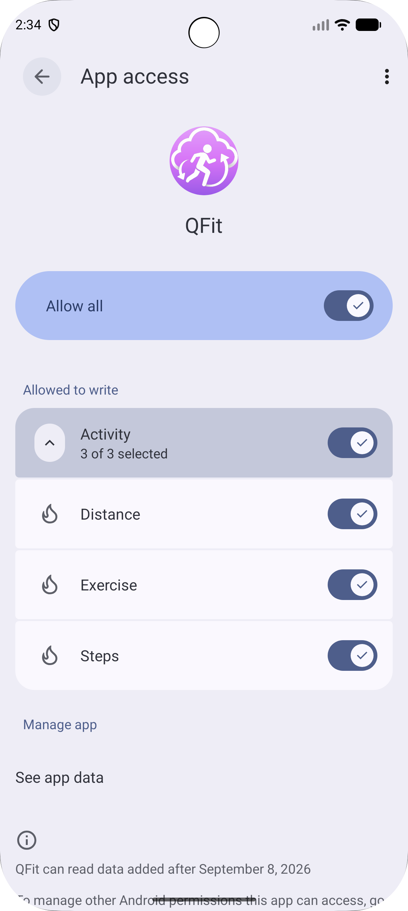
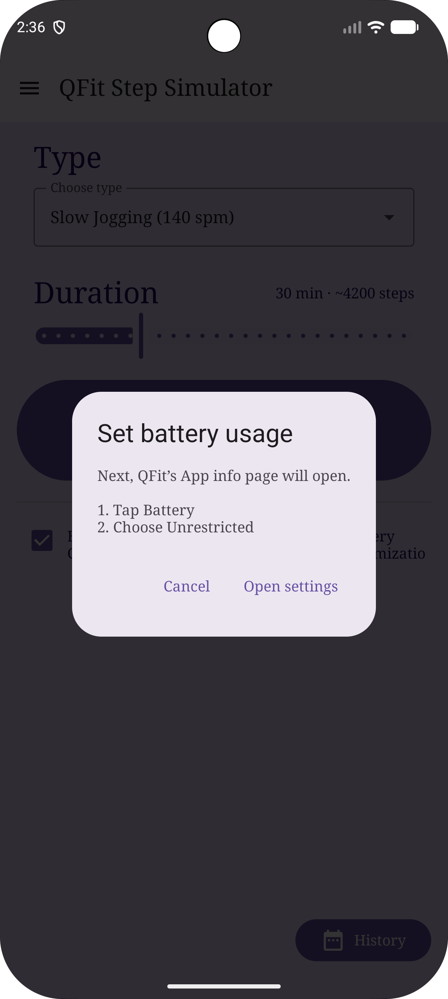
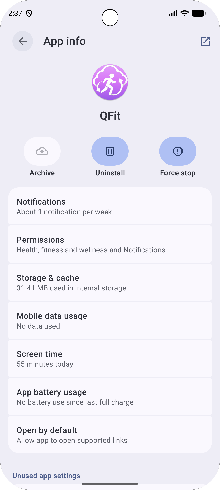
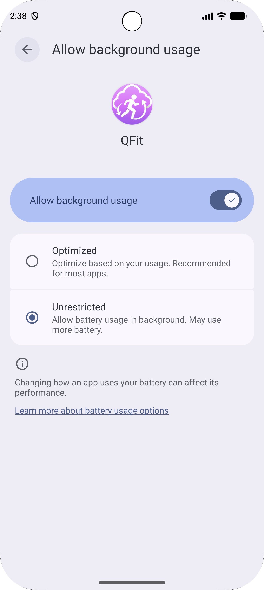
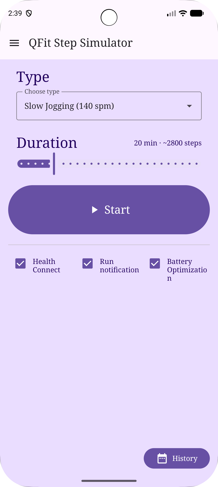
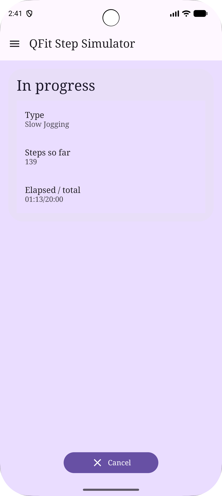
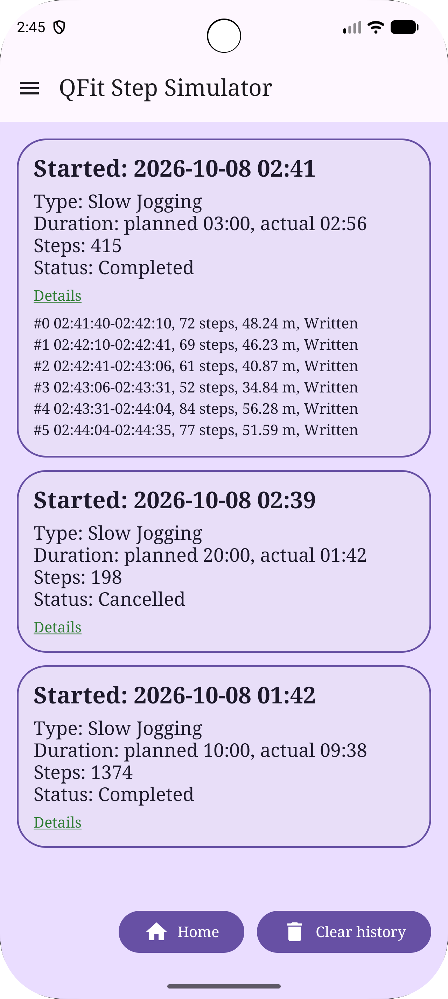

No sign-in. On-device permissions only. Nothing uploaded to the developer.
Follow the order of a first launch: install, finish the required settings, then complete your first run.
0. Before you start
An Android phone (Android 12 or newer recommended)
Health Connect installed (built in on many phones; otherwise get it from Play Store)
The QFit install file (APK)
Please note: QFit writes simulated steps for personal testing and entertainment only.
Follow the terms of any health or game app you use. Use at your own risk.
1. Install and open QFit
Copy the APK to your phone and tap to install.
If Android blocks unknown sources, allow installs from that source, then try again.
Open QFit. On Home you can set type and duration, use the three checkboxes below, and open History at the bottom right.

Figure 1 · Home overview
2. Allow Health Connect write access
On first launch, Android usually shows the Health Connect permission screen automatically.
Allow QFit to write steps, distance, and exercise.
Allow the required items (you can use Allow all), then tap Allow.
Back on Home, confirm Health Connect is checked.
If the prompt did not appear, or you denied it earlier: tap Health Connect on Home and grant access again.

Figure 2 · Health Connect permissions
Tip: QFit does not need a Google sign-in and never sends your account to the developer.
Data stays in Health Connect on this phone for other apps to read.
3. Turn on Run notification
Run notification on Home is on by default—keep it on.
While a run is active, an ongoing notice appears so the system is less likely to kill the app.
Confirm Run notification is checked.
If Android asks for notification permission, choose Allow (common on Android 13+).
If you turn Run notification off, there is no ongoing notice and the app is easier to kill when the screen is off.
Step writes may be less reliable. Keep it on for normal use.
4. Set Battery Optimization to Unrestricted
This step matters. With Unrestricted, QFit can keep writing steps to Health Connect while the screen is off.
Tap Battery Optimization on Home.
A guide dialog appears: App info → Battery → Unrestricted.
Tap Open settings.
On QFit’s App info page, tap App battery usage (some phones show Battery).
Choose Unrestricted (wording may vary by OEM).
Return to QFit and confirm Battery Optimization is checked.

Figure 4a · Battery guide dialog

Figure 4b · App info

Figure 4c · Choose Unrestricted
Menu names differ by brand; the goal is always Unrestricted battery usage for QFit.
If the checkbox does not update immediately, check again on Home.
5. Choose type and duration
Type: defaults to Slow Jogging; you can also pick Walk, Jog, Marathon, or Sprint.
Duration: drag the slider. For a first try, use 1–5 minutes (default is about 20).
The estimate next to Duration shows roughly how many steps this run will write.

Figure 5 · Type and duration
6. Tap Start and wait to finish
When all three checkboxes are ready, tap Start.
On the In progress screen, watch steps so far and elapsed / total time.
If Run notification is on, the status bar also shows the run.
The run ends when time is up. You can tap Cancel (with confirm): no further writes occur, but steps already in Health Connect remain, and History shows Cancelled.

Figure 6 · In progress
First run tip: try 1–3 minutes with the screen on and confirm steps increase.
Then try screen-off or a longer duration.
7. Check History
On Home, tap History at the bottom right.
Each card shows start time, type, duration, steps, and status (Completed / Cancelled).
Tap the green underlined Details to expand segment write results.
Clear history only deletes local QFit records—not steps already in Health Connect.

Figure 7 · History
8. FAQ
Q. Health Connect stays unchecked?
Tap Health Connect again to finish granting access, and confirm Health Connect is installed.
Q. Battery Optimization stays unchecked?
Confirm you chose Unrestricted. QFit rechecks when you return; if needed, force-stop the app and reopen.
Q. Steps stop increasing with the screen off?
Keep Run notification and Battery Optimization on. After the screen turns on again, QFit tries to catch up writes that were due while the screen was off.
Q. Another app does not see the steps?
In Health Connect, give that app read access and confirm it can see data written by QFit.
Q. What is the top-left menu?
About: purpose, disclaimer, and version numbers.